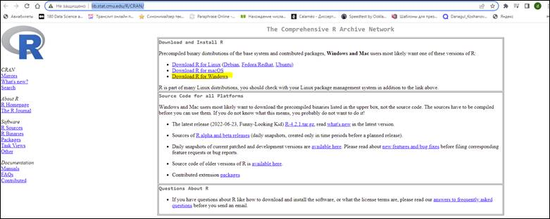
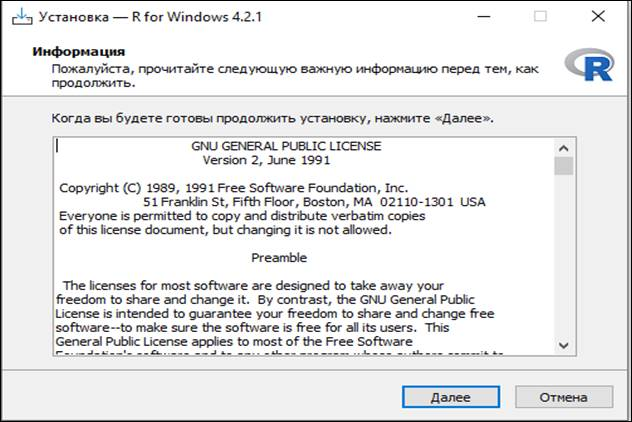
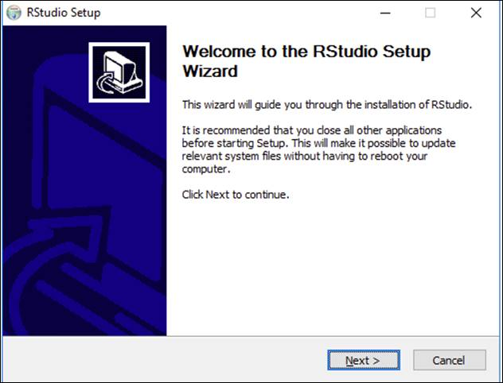
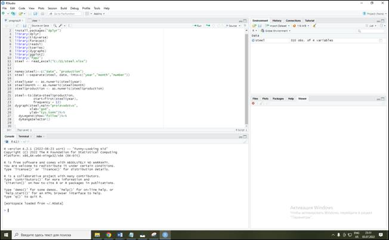
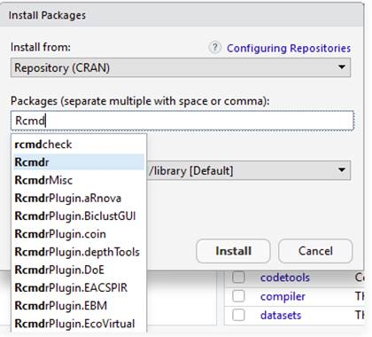
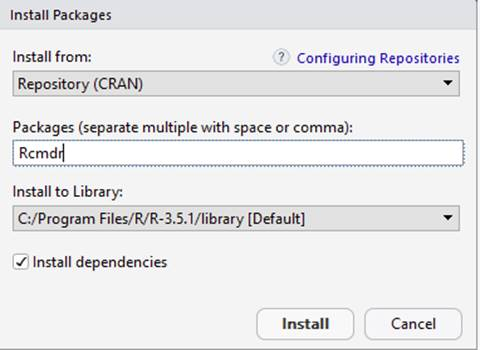
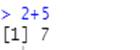

1. R программалау тілі.
Программаны орнату, баптау. Деректердің типтері
Мақсаты: R программалау тілінің негіздерін қарастыру және оны
орнату және мәліметтердің типтерін қарастыру.
R - статистикалық деректерді өңдеуге және графикаға
арналған бағдар-ламалау тілі және GNU жобасы бойынша еркін және
ашық бастапқы есептеу ортасы болып табылады. Бастапқыда R
Окленд университетінің статистика бөлімінің мүшелері
Росс Айхака (Росс Ихака) және Роберт Джентльмен әзірлеген.
Ол статистикалық деректерді талдайтын бағдарламалық құрал
ретінде кеңінен қолданылады және статистикалық бағдарламалық
қамтамасыз ету үшін іс жүзінде стандартқа айналды.
Тіл мен программалық орта GNU GPL бойынша лицензияланған және
бірқатар операциялық жүйелерге арналып құрастырылған:
FreeBSD, Solaris және Unix пен Linux, Microsoft Windows, macOS.
R интерпретацияланған программалау тілінің жұмыс істеудің
негізгі жолы - командалық интерпретатор. Тіл регистрге сезімтал,
синтаксисі жағынан ол бір жағынан схема сияқты функционалды
тілдерге, екінші жағынан қара-пайым синтаксисі және шағын
базалық жиынтығы бар типтік заманауи сценарий тілдеріне ұқсас.
Жалпы бағдарламалау тілі ретінде R программалау ортасының
тиімділігі пакеттерді шексіз кеңейту мүмкіндігінің болуы. R
базалық таратуы 2019 жылдан бастап қол жетімді жалпы саны 15 316
пакеттен тұратын пакеттердің негізгі жинағын қамтиды. Әмбебап
статистикалық есептеудің барлық дерлік тиісті құралдары
R-да регрессиялық талдау және уақыттық қатарларды
талдау, сондай-ақ жоғары мамандандырылған мәселелерді
шешуге және белгілі бір салалардағы зерттеулерге арналған көптеген
нақты алгоритмдер сияқты жүзеге асырылады.
Тілдің тағы бір ерекшелігі - жалпы графикалық форматтарға
экспорт-талатын және презентациялар немесе жарияланымдар үшін
пайдаланылатын жоғары сапалы типографиялық деңгейдегі
графиканы жасау мүмкіндігінің болуы. R программалау ортасында
графикалық пайдаланушы интерфейсі бар және нәтижелерді
графиктер мен диаграммалар түрінде көрсететін маман-дандырылған
статистикалық талдау утилиталарын жасауға мүмкіндік беретін
дайын пакеттер құрамы бар.
R программалау ортасын орнатайық.
R – деректерді өңдеуге, есептеуге және графикалық
бейнелеуге арналған бағдарламалық құралдардың
біріктірілген жиынтығы. Оны деректерді талдау үшін массив және
матрицалық есептеулер сияқты ғылыми есептеулер үшін
тиімді пайдалануға болады.
R Studio R пайдалануды жеңілдетеді. Ол код редакторын, жөндеу және
визуализация құралдарын қамтиды.
R программасын орнату үшін http://lib.stat.cmu.edu/R/CRAN/ сілтемесіне көше отырып орнатуға болады. Мысалға,
Windows операциялық жүйесіне орнату мысалын қарастырайық
(Сурет 21).

Сурет 21- R программасын жүктеп
алу ортасы
http://lib.stat.cmu.edu/R/CRAN/ web-сайттан қосымшаны
жүктегеннен кейін, Windows операциялық жүйесіне арналған
программалық ортаны 22-ші сурет-тегідей Далее батырмасын баса отырып
орнатамыз.

Сурет 22- R программасын орнату
R Studio программасын https://www.rstudio.com/ ресми сайтынан орнатуға болады (Сурет 23).

Сурет 23- R Studio программасын көшіру
Windows-қа арналған нұсқасын
таңдаңыз. Жүктелген программаны орнатыңыз (Сурет 24).

Сурет 24- R Studio программасын орнату
«Далее» батырмаларын және қажетті пункттерді таңдай
отырып, програм-маны орнатамыз. Нәтижесінде программа терезесі іске қосылады (Сурет 25).

Сурет 25- R Studio программасының
терезесі
Қажетті пакетті табу үшін іздеуді пайдаланыңыз.
Мысалы, tcltk бумасына негізделген R үшін платформаға тәуелсіз
негізгі статистикалық GUI (графикалық пайдаланушы интерфейсі) rmcdr
пакетін орнатайық (Сурет 26).

Сурет 26- Rmcdr пакетін іздеу
Install батырмасын баса отырып орнатамыз (Сурет 27).

Сурет 27- Rmcdr пакетін орнату
Сондай-ақ қажетті пакеттерді тікелей консольден орнатуға
болады, мысалы (Сурет 28):
> install.packages('txtplot')

Сурет 28- Пакеттерді консоль арқылы орнату
Сонымен қатар, программалық
ортаның функционалдығын жылдамдату мақсатында purrr пакеті
орнатылады. Artifact purrr пакеті Хэдли Уикхэм жазған жоғары деңгейлі
функционалдық бағдарламалау тілі пакеті болып табылады. Ол
функционалдық R программалаудың жетіспейтін бөліктерін
толтырып, бағдарламалауды функционалды етеді.
Мәліметтердің типтері
Деректер типі – бұл класс мүшелерімен
және оларға қолдануға болатын операциялармен
сипатталатын деректер класы. Деректер түрлерінің көмегімен
біз сандар, жолдар және т.б. сияқты бізге таныс нысандарды көрсете
аламыз. R тілінде бірнеше негізгі деректер типі бар (Кесте 4).
Кесте 4
Деректердің типтері
|
Атауы |
Мәліметтердің типі |
|
complex |
Комплексті сандар |
|
character |
Символды (жолдық) |
|
integer |
Бүтін сандар |
|
logical |
Логикалық мәндер |
|
numeric |
Нақты сандар |
|
date |
Дата |
Сандар R тіліндегі негізгі
деректер түрі болып табылады. Оларға өзгер-мелі нүктелі
сандар мен бүтін сандар кіреді. R терминологиясында мұндай деректер
интервалдық деректер деп аталады, өйткені оларға сандық
сызықтағы интервал ұғымы қолданылады. Бүтін
сандар дискретті аралық сандар, ал өзгер-мелі нүктелер үздіксіз
интервал сандары болып табылады. Сандарды қосуға, азайтуға және
көбейтуге болады:
2 + 3
## [1] 5
2.5 + 3.1
## [1] 5.6

Сондай-ақ дәрежеге шығару үшін арнайы оператор бар.
Ол үшін қос көбейту белгісін (**) немесе циркумфлексті (^)
пайдалануға болады:
2 ^ 3
## [1] 8
Бөлу нәтижесі әдепкі бойынша өзгермелі нүкте
түрінде болады:
5 / 3
## [1] 1.666667
Бөлуді бүтін түрде (бөлшек бөлігінсіз) орындағыңыз
келсе, онда %/% операторын пайдалануыңыз керек:
5 %/% 3
## [1] 1
Бөлімнің қалдық бөлігін %% операторы арқылы
алуға болады:
5%% 3
## [12]
Сандық функциялар
Деректер құрылымдарын қарастырмас бұрын,
функциялармен танысуымыз керек. Функция ұғымы математикада қолданылатын
ұғыммен бірдей. Мысалы, функция Z деп аталуы мүмкін және
2 аргументті қабылдайды: x және y. Бұл жағдайда ол
Z(x,y) түрінде жазылады. Функцияның мәнін алу үшін жақшадағы
х және у үшін кейбір мәндерді ауыстыру керек.
Функциялардың ең маңызды мысалдары математикалық. Бұл
sqrt(x) түбірін қабылдау функциялары, abs(x) модулі, дөңгелектеу(x,
цифрлар), натурал логарифм abs(x), sin(x), cos(x), tan(x) тригонометриялық
функциялары, оларға кері asin(y), acos(y), atan(y) және т.б.
Негізгі математикалық функциялар R ортасында әдепкі бойынша қол
жетімді және қосылымды қажет етпейтін негізгі пакетте қамтылған.
Функция аргументі ретінде айнымалыны, тұрақты мәнді,
сондай-ақ өрнектерді пайдалануға болады:
sqrt(a)
## [1] 2.236068
sin(a)
## [1] -0.9589243
tan(1.5)
## [1] 14.10142
abs(a + b - 2.5)
## [1] 6.5
Жолдар
Жолдар тағы бір маңызды деректер түрі болып табылады.
Жолдың айнымалы мәнін жасау үшін жол мәтінін тырнақшаға
алу керек.
Мысалы:
s = "Алматы махаббатым менің"
s
## [1] "Алматы махаббатым менің"
Жолдың ұзындығын nchar() функциясы арқылы табуға
болады.
Мысалы:
nchar(s)
## [1] 23
Жолдан ішкі жолды (жолдың бөлігін) шығару үшін
substr() функциясын пайдалана аласыз, оған бірінші және соңғы
таңбаның нөмірін бере аласыз:
substr(s, 8, 18)
## [1] " махаббатым "
Жолдарды сандар сияқты қосуға болады. Бұл операция
конкатенация деп аталады. Жалғастыру нәтижесінде жолдар бір-бірімен
қосылып, бір жол алынады. Сандардан айырмашылығы, біріктіру +
операторымен емес, арнайы paste() функциясы арқылы орындалады.
Біріктірілетін жолдар үтірмен бөлінуі керек, олардың саны
ерікті болуы мүмкін.
s1 = "4 шілде"
s2 = "домбыра"
s3 = "күні"
s = paste(s1, s2, s3)
s
## [1] "4 шілде домбыра күні"
Уақыт
R-де уақытша деректермен жұмыс істеу үшін арнайы типтер
бар. Мұндай деректер Date түріне жатады және оны жасау үшін
as.Date() функциясы пайдаланылады. Бұл жағдайда нүкте қандай
да бір арнайы оператор емес, функция атауының бір бөлігі ғана.
Функцияға аргумент ретінде жол ретінде жазылған күнді көрсету
керек.
Мысалы:
birth = as.Date('1986/02/18')
birth
## [1] "1986-02-18"
Арнайы Sys.Date ()функция арқылы бүгінгі күнді білуге болады:
current = Sys.Date()
current
## [1] "2021-12-21"
Логикалық типтер
Логикалық айнымалылар шартты тексеру қажет жерде пайда болады.
Логикалық айнымалы TRUE (шын) немесе FALSE (false) болуы мүмкін.
Тиісінше T және F ықшам константалары да оларды белгілеуге болады.
Келесі мәлімдемелер логикалық айнымалыларға әкеледі:
Тең (==) – операндтардың теңдігін тексеру
Тең емес (!=) – операндтардың теңсіздігін тексеру
Кіші(<) - бірінші аргумент екіншісінен аз
Кіші не тең (<=) - бірінші аргумент екіншісінен кіші немесе оған
тең
Үлкен (>) - бірінші аргумент екіншісінен үлкен
Үлкен немесе тең (>=) - бірінші аргумент екіншіден үлкен
немесе оған тең.
Олардың қалай жұмыс істейтінін қарастырып көрейік:
a = 1
b = 2
a == b
## [1] FALSE
a != b
## [1] TRUE
a > b
## [1] FALSE
a < b
## [1] TRUE
Бір уақытта бірнеше шарттарды тексеру қажет болса, оларды
логикалық операторлар арқылы біріктіруге болады. Олардың
ішіндегі ең танымалдары:
Және (&&) – екі шарттың да ақиқаттығын
тексеру;
Немесе (||) – шарттардың кем дегенде біреуінің шындығын
тексеру;
Емес(!) – операндты терістеу.
Мысалы:
c = 3
(b > a) && (c > b)
## [1] TRUE
(a > b) && (c > b)
## [1] FALSE
(a > b) || (c > b)
## [1] TRUE
!(a > b)
## [1] TRUE
Типтерді түрлендіру
Деректер типін түрлендіру as(d, type) тобының функцияларын
пайдалана отырып жүзеге асырылады.
Мұндағы, d - кіріс
айнымалысы, ал типі- бұл деректер түрлендіруге жататын деректер түрінің
атауы.
Мысалы:
k = 1
print(k)
## [1] 1
class(k)
## [1] "numeric"
l = as(k, "integer")
print(l)
## [1] 1
class(l)
## [1] "integer"
As() функциясы үшін мұндай түрлендірулерді ықшамырақ
жазуға мүмкіндік береді:
k = 1
l = as.integer(k)
print(l)
## [1] 1
class(l)
## [1] "integer"
m = as.character(l)
print(m)
## [1] "1"
class(m)
## [1] "character"
Тапсырмалар:
1. int типті үш айнымалыны жариялаңыз. Олардың біріншісіне
сандық мән беріңіз, екінші айнымалы бірінші айнымалыға
3-ке көбейтілген, ал үшінші айнымалы бірінші екеуінің қосындысына
тең.
2. Жолды келесі ережелерге сәйкес талдау: Жол берілген. Алдымен осы
жолдың үшінші таңбасын, екінші жолға осы жолдың
соңғы таңбасы, үшінші жолға осы жолдың алғашқы
бес таңбасы, төртінші жолда соңғы екі таңбадан
басқа барлық жолды басып шығарыңыз.
3. Пернетақта арқылы бос орындармен бөлінген сөздерден
тұратын жол берілген. Құрамында қанша сөз барын
анықтаңыз.
4. Нәтижесінде бүтін сандарға қандай операция ешқашан
бүтін санды шығармайды?
5. 3 аргументті қабылдайтын күн функциясын жазыңыз: күн,
ай және жыл. Күнтізбеде мұндай күн болса, True мәнін,
ал кері жағдайда False мәнін экранға шығарыңыз.
Бақылау сұрақтары:
1. R программалау ортасының басқа программалау тілдерінен қандай
айырмашылығы бар?
2. Сіздің ойыңызша, статистикалық аналитиканы R программалау
тілінде немесе Python бағдарламалау тілінде іске асырған тиімді?
3. R программалау тілінде пакеттерді қалай орнатуға болады?
4. Rstudio-ны орнатудың қандай қажеттілі бар?